The ass-backwards state of existing games
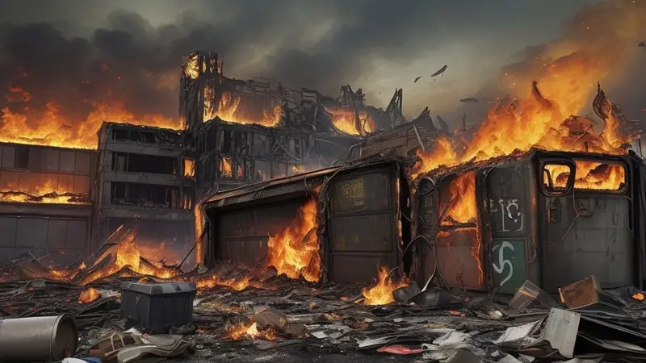
Traditionally, old and existing games have a rather crappy, shallow idea of how they are set up in terms of pacing and difficulty. It can be summed up as “the longer you play the game, the harder it gets until you give up”.
This means that the difficulty keeps growing, the pacing gets more frantic and the game becomes more and more relentless until you simply can’t keep up physically or mentally. You are eventually doomed to lose and fail by design.
This isn’t fun nor humane. The game is rigged to be basically unwinnable in the long term. Losing sucks and having a game at its core becomes progressively more unfair the more I play it makes no sense.
As a player, the effort I put into the actions ingame are meant to achieve a victory of some kind, otherwise what's the point of participating? My ultimate goal while playing any game is to hopefully be able to master it so I can keep winning sustainably for the rest of eternity, even if I make a few mistakes and encounter some setbacks on the way.
Winning and success should be normal and common compared to losing and failure. The game should be winnable with each playthrough I start by its very design. It is rather odd but most games aren’t set up that way, much to their detriment.
The typical metagame progression scam of ‘zero to hero’
Progression in traditional old and existing games isn’t any better either:
- You start weak, poor and limited, causing most of the game’s content and features to be inaccessible due to this. The game is actively more difficult in the beginning, when the player is still learning how to play it, meanwhile returning experienced players aren’t given methods to skip the early stages without resorting to cheats and hacking.
- The mid-game is a frustrating slog where most of your mental focus is directed towards the progression system scam where instead of being able to enjoy the present moment, you accumulate power, wealth and wider access to the game’s content and features.
- Late-game you notice that most of early game content is useless and worthless to you, making its existence in the game an annoyance that clutters up your inventory/options/slots/shops/locations that are no longer worthy of interacting because you’ve become powerful, wealthy and finally have access to everything. Even the good game mechanics that were satisfying to interact with no longer have a meaningful context to engage because the player reached a narrative deadend. Meanwhile because the player is now at their strongest at the end of the game, nothing in the game can offer adequate resistance or challenge anymore to be worth caring about. The game became hollow, spent, used up - no longer interesting.
I’m calling it a scam because you get duped into running inside the hamster wheel to hoard power, wealth and skill only to notice you have no sensible place or reason to use them anymore. The whole game your attention was tricked into following this progression system that is the equivalent of a carrot on a stick just out of reach, only to eventually find out that the carrot was a fake made out of hollow cardboard when you finally get it.
Scalable opponents: I am powerful because fuck you
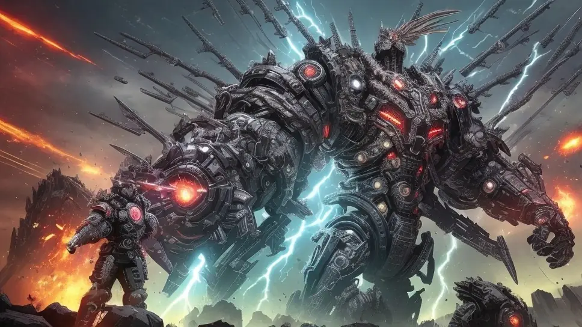
Of course there are games that scale the opponents while you level up but that just brings up the first problem I mentioned; progressively stronger enemies get so exhausting to deal with that you eventually give up.
Another notable thing to point out about dynamically scalable opponents is that it creates a sense of reality dissonance; it seems like the universe is revolving around you, arbitrarily adjusting entities to match or surpass your strength each time you level up, regardless if it makes logical sense, regardless if it's believable or enjoyable as an experience.
I mean, if you’re trying to fight something or someone and you continuously succeed at damaging these opponents then surely they’re supposed to get weaker, have less resources to spend on you, become reduced in numbers and experience setbacks in their logistics/tech/organization?
Scalable opponents also make encountering lesser, weaker opponents increasingly more rare, which would otherwise provide a balanced experience to cool down between challenging encounters instead of difficulty levels ramping up endlessly, forcing the player only to encounter more difficult foes. There's a clear lack of intermissions, breaks, calm moments, occasional easy encounters and such that scalable opponents as a concept fails to provide.
Scalable zones: Just a linear game masked as a fake open world
Another concept is scaled zones, often popular in open world role playing games, which means certain locations, zones or areas of the map are outright easy and others are progressively harder.
The player is technically free to go anywhere, but the progression system effectively makes it pointless to go to harder zones if the player doesn’t satisfy arbitrary leveling requirements; combat is impossible, obstacles are impossible, prices are too high and the player isn’t really allowed to interact with those places until they’ve progressed according to a linear path that was decided by the author.
Ultimately it's a false promise, an inherently linear game masked as an open world. It's equally bad as the scaled opponents concept, having the same problems as it does but presented differently. Scaled zones divide the world into unnatural artificial sections that exist like isolated rigid bubbles, unable to change, unable to affect other areas, relying on nonsensical rules that break immersion and believability of the world and how things work in it. It creates a rather narrow-minded universe that feels fake and contrived.
Similarly, scaled zones result in earlier areas feeling pointless to be in once you’ve “graduated” from them, having no reason to return to them because the benefits and situations aren’t worth the player’s attention any longer. The real world doesn’t work like that which greatly harms the immersion factor of a game that adopts the scaled zones concept. It's not like your hometown or its surrounding areas don't evolve or change with time in the real world as you continue to live and do stuff in it, so why should it stay static in a game?
Roguelites: Intentionally wasting your time by hiding basic abilities behind unlocks and looping through the same pattern without variety
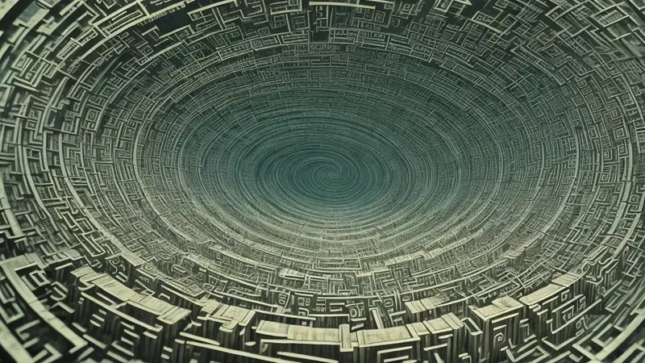
Lastly there are roguelites that are intentionally set up to be difficult to the point where regardless of skill you are more likely to fail than you are to win. And when you do win, everything you gained is forcibly reset.
They combine scalable enemies or scalable zones with the typical zero to hero structure, where again, the game becomes more difficult and frantic towards the end, but now there's an inbuilt mechanism to reset the player back to zero when the climax is reached to encourage repeated playthroughs.
Sometimes each victory comes with some new content unlocked or the player may receive marginal upgrades that make the player become more fairly matched against the opponent… which is kind of scummy because it implies that the player is intentionally made artificially weak against the opponent in order to artificially prolong the game time by wasting the player’s time in having them to first grind out and suffer in author-induced poverty before the game becomes actually playable and fair.
No game should ever do that; to waste a person’s time intentionally. That’s bad game design.
The other failing of a roguelite metagame is that each playthrough will always follow the same pattern with each playthrough; start off calm and easy, ramp up towards the end and finish with an intense final battle. There is no variety of flexibility here. It would be interesting to have campaigns start off with middle intensity, have a moment of calm in the style of “calm before the storm”, then have an intense final battle.
Or to take it even further and have each campaign’s pacing and difficulty differ per each playthrough like this:
Campaign: Start - middle - end
- [easy][medium][easy]
- [medium][medium][hard]
- [hard][medium][hard]
- [hard][easy][hard]
- [medium][medium][easy]
- [hard][easy][easy]
- [medium][medium][medium]
- [easy][easy][medium]
Roguelites completely lack the above flexibility, unfortunately. You’re only given a single pipeline that goes from easy to hard, when sometimes I would like to have less intense campaigns to play through where I get to enjoy the awesome mechanics of a game but don’t have to deal with the ramp up.
Or sometimes I want things to kick off with a blast instead of having to trudge through a quiet early game first to finally get to what I wanted. Or anything else in between or any other type of campaign difficulty curve. It shouldn’t need to be the same old easy-medium-hard pattern every time.
And many more sad attempts like those, unable to see that the core logic is flawed, limited and counterintuitive, no matter how they organize it
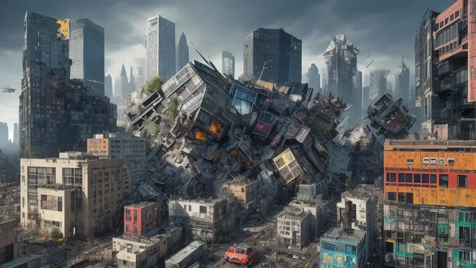
Overall there are many different variations, combinations and setups that try to deal with pacing, difficulty and progression on a metagame level, but most of them are awful because they try to work against nature/real life rather than being inspired by it and embracing it.
And that's the key: Be inspired by the real world and nature when setting up a metagame and its systems.
The moment you try to rely on arbitrary nonsense to structure your metagame, you have already stepped in the wrong direction and you’ll be automatically violating your player’s fundamental human needs of freedom, believability(just common sense, not actual accurate realism), meaning and clarity(keeping things consistent, without magical rules affecting others differently for no reason).
These are very bad for immersion, making it much less likely for the player to get into a flow state in playing the game nor taking it seriously to truly enjoy it, nor be motivated to continue playing it.
Worst of all, nothing mentioned above enables infinite play, thus making these bad metagame designs effectively a deadend.
They cannot be used to create an infinite metagame as they are inherently linear, where progression flows only in one direction and keeps going until it reaches a point from which it cannot continue.
This is because either the player becomes permanently overpowered, the opponents get permanently overpowered or both end up at a boring monotone impasse where both player and opponents are permanently stuck in an endless unsustainable arms race.
Although there are thousands of games released every year, many still end up making the same mistakes over and over because they don’t question the status quo or notice that traditional designs are not necessarily good to begin with.
There do exist better options.
Hints for setting up pacing, difficulty and progression to achieve an infinitely playable metagame structure
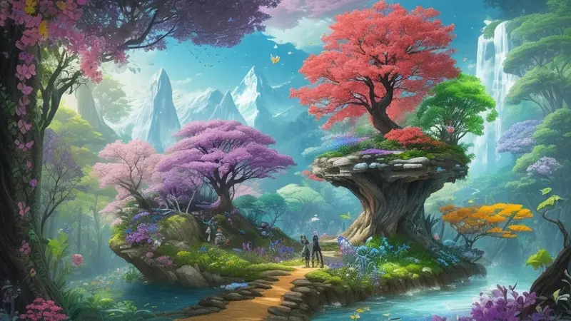
What I recommend for an infinite metagame in regards to difficulty, pacing and progression is a list of many things for you to consider when designing your game. The list below are general suggestions that are mostly universal and thus are applicable to most projects.
Again, the most important thing in game design is purpose - the purpose of the project - aka the goal you’re trying to achieve with the game you’re making, in relation to satisfying fundamental human needs, whether they be yours or your player’s needs. As such, the suggestions below are only suitable if your project’s purpose lines up with them.
As a disclaimer, I’m assuming here that your game is driven by fun game mechanics instead of only being a one-time story experience without any tactile gameplay to speak of.
Infinite metagames require solid game mechanics that are fun to play with on their own merit, be that parkour, shooting, driving, solving puzzles or anything else where the player is actively doing something.
The whole point of an infinite metagame system is to give those fun game mechanics a place to exist and thrive where the narrative of the game is only there to give everything context and meaning, instead of constricting, restricting and limiting them for the sake of following some specific curated scripted story.
If a game does has a scripted story, then consider the concept of an infinite metagame as a New Game+ mode:
- In a regular/default New Game mode the ‘first time new player’ goes through a curated version of the campaign that has a lot of restrictions and limits on what the player is allowed to encounter and how they’ll encounter it, or what features/content is locked away for purposes of story progression. You could treat this first playthrough as a thinly veiled tutorial before the game mechanics driven “true game” opens up in New Game+ mode.
- In a New Game+ those limits and restrictions are lifted, allowing the campaign to be presented with far more flexibility, freedom and its content shuffled and swapped in any way possible. You are essentially given the option to replay the game in a way where the story is retold again but it is no longer enforced and parts of it are skippable, refocusing the entire experience to lean heavily on the gameplay now. This shift can be taken even as far as to twist the original story to make it possible to have gameplay situations that normally would never happen in the original story.
In this way, even a hybrid ‘scripted narrative + engaging game mechanics’ type of game can still be converted into operating as an infinite metagame, even if originally it would have been worth only a single playthrough.
Again, to make this work the game’s content and overall system needs to be built in a specific way. I already wrote articles that go into detail about this, like the “Additive Vs. Multiplicative Game Content And Why The Latter Is Better” article and the “Where Does Meaning Or Motivation Come From In A Video Game To Make It Worth Playing?” article. Please read those first if you haven’t already.
With that out of the way, here are my universal recommendations:
First time, new player and returning player experiences
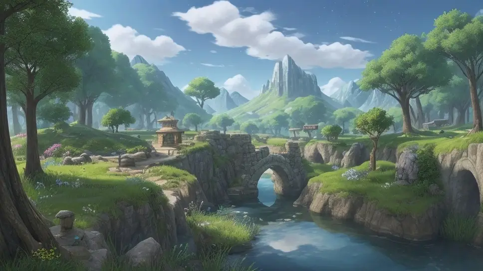
For first time players or fresh new characters start with some hidden or overt limiters on what kind of difficulty the player will experience in their first 1-10 hours of gameplay.
Because the controls are still new and because the content, systems, mechanics and features are still unknown to the new player, having a “grace period” is needed to ease them into the game before removing all limits and letting the full potential of the game go wild.
Not having this can scare away players because it lacked a safe environment to learn it. Contrary to popular belief, there is no such thing as a “spoiled child”, that's a myth. The concept of “throwing someone into the deep end of the pool” doesn’t constitute a good healthy learning environment, the person will only gain resentment towards those who did that to them because it's abuse.
Being supportive, gentle and caring is the best way to ease a new person into the game, especially those whom have never played video games before - and frankly those whom are experienced will appreciate the hospitality gesture, resulting in more praise and recommendations from the playerbase.
For expert players, give them an option or a fast track to go turn off these limiters - either by performing something drastic ingame or by going to the danger section of the options menu to turn on “pro mode: no limits - not for beginners!”
Alternatively if the game has an open-world aspect to it, then instead of arbitrary limiters you can present routes or options that are more volatile/difficult and offer higher rewards for the higher risk they involve.
A great example of this is how ‘immersive sim’ games do it, such as Deus Ex which offer alternative routes (close combat, distance combat, stealth, speech) to complete an objective or something like Fallout New Vegas where you can choose to go directly towards your main target along the shortest path that is normally guarded by very dangerous monsters that early on can kill you easily, but a crafty player may be able to get past them instead of having to go through a much longer and slower route.
But the point of this is to at least notice and recognize the different types of player that enter the game after a fresh install; some of them will have very little experience in playing video games at all, while others will be more experienced, having played different games before and then there are those that already had played your game before and then reinstalled it after months or years to play it again.
As the developer, remembering these types of players and catering to them all by doing the things I listed in this section will make them happier without excluding one group or another. These solutions will make everyone satisfied and cared for appropriately.
Modular procedural campaign structures
Like mentioned before, instead of using the repetitive Easy-Medium-Hard campaign structure, have each procedural campaign’s pacing and/or difficulty differ per each playthrough like this:
Campaign: Start - middle - end
- [easy][medium][easy]
- [medium][medium][hard]
- [hard][medium][hard]
- [hard][easy][hard]
- [medium][medium][easy]
- [hard][easy][easy]
- [medium][medium][medium]
- [easy][easy][medium]
But that’s not all, take a step further and also vary the length of the campaign by randomly making it:
- [very short]
- [shorter]
- [regular]
- [longer]
- [extra long]
Variety is fun, playing a shorter or longer session can feel refreshing instead of playing the same length each time.
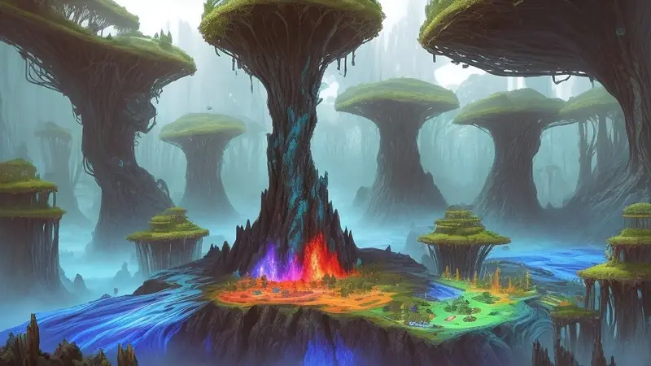
Similarly, if your game has distinct themed zones then you can shuffle those around so it isn’t the same old pattern of forest, desert, snow and lava stages in that specific order. Even if the latter ones naturally feature more hazards, it is always possible to design a lava stage to be calmer than a forest stage; place enough obstacles and opponents in the latter and it’ll become just as difficult as what a regular lava stage could be, if not even harder.
Besides shuffling zones around, have each zone work as a module instead where you can have some zones not appear during a session while other zones appear multiple times, like “desert, desert, snow, forest” or any other combination of these.
It should be obvious, but you can substitute the forest, desert, snow and lava example I mentioned here with whatever equivalents your particular game has. I simply mentioned those because they’ve been done so often and they’re almost always in that specific order, symbolizing “easy, medium, hard, hardest” in terms of difficulty in the oh-so-many games they appear in.
In regards to all of these, the central point I’m trying to make is for you to consider every aspect of your campaign as a swappable module.
To give a non-exhaustive list, you can consider these as modules/parameters that your metagame system can procedurally or randomly choose when your campaign generator is creating a new session to play in:
- Difficulty, aka how tough or lethal are opponents overall? (easy, medium, hard)
- Pacing, aka how many opponents, how aggressive they are, what type they are? (slow, average, frantic)
- Length, aka how much distance the player has to travel, how many rooms they need to visit or how many objectives they have to complete overall to win the campaign? (short, regular, long)
- Number of zones, plot points, sectors, areas the player has to complete to win the campaign, compared to the original intended standard? (less, same, more)
- Amount of supplies/resources/ammo/materials compared to the original campaign? (scarce, fair, abundant)
- How likely can content from certain locations/zones/themes show up randomly in other places too? (rare, seldom, common)
- How prepared does the player begin with each new campaign; do they get any starter goods or do they begin with only their pants on and nothing else? (poor/naked, okay, rich/heavily armored)
- Do bosses appear in the campaign? (all of them, some of them, none of them)
- Are some items, vehicles, weapons or characters unavailable in the next campaign? (everything is included, some are missing, many things are missing)
Notice that it doesn’t have to be a choice between just 3 settings like shown above. You can have 2-9 settings of different degrees of severity, like this excessive example:
[nano-microscopic-tiny-small-medium-large-huge-gigantic-enormous] (9 settings)
Or just:
[small-large] (2 settings)
Or it could be even a numerical value between “1 and 100” or “-1.0 and 0.0 and +1.0”, or something similar if that type of setting makes more sense for the particular campaign parameter module you may have.
(Personally, for most things I prefer to use rigid settings that then can be further slightly “mutated” by adding a numerical multiplier to skew or randomize them slightly in one or another direction. So in essence, I sometimes use both together.)
In other words, don’t rigidly implement levels/maps/worlds/campaigns/missions in a restricted way where they can only be played in one way, seen and understood in one way (“lava is the hardest level therefore it should appear last always”-type of shortsighted logic).
Look for opportunities to make anything and everything modular so that the procedural campaign generator has more things to switch and shuffle around.

Ultimately a procedural campaign generator is nothing more than a branching tree or flowchart of if/else statements on the programming side, the most basic and easiest type of coding available, along with occasional uses of the easy-to-use Random(x,y) function. This isn’t rocket science and is easy to achieve, easier than making the actual game mechanics no less.
Setting up either a New Game+ (if it's originally a scripted story campaign) or just having this type of campaign generation as the default mode can have a game be replayable/playable infinitely.
The benefits of such a system can help your game stay alive longer (even forever), earn more money over its lifetime and become fertile ground for a dedicated playbase that’ll keep playing the game for years, even returning to it after many months of years if they got temporarily tired of it with it and still having a unique experience fresh with each new New Game+ or procedural campaign thanks to its infinite metagame system.
It is a huge shame this isn’t implemented more often despite how simple it is. It's just a matter of organizing the game and its content in a smarter way and then utilizing the full potential of that structure.
Progression and balancing concerns
This depends on the project and there are many options that each suit a particular game.
Scripted storyline based games
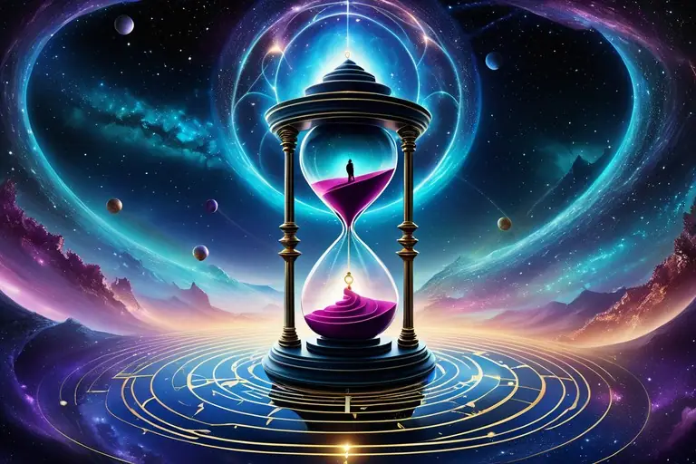
For a scripted storyline based game, inevitably the narrative demands a reset each time a new session is started. The player will essentially loop through the story again and again, but with a different flavor each time. The narrative provides context for each session and usually balancing will be dictated by the narrative.
- If a player begins weak and grows strong at the finale, then that’s what it will be.
- If during the story the player loses power or becomes weak during a pivotal moment, either permanently or temporarily, then that’s what it will be.
- If the player starts strong but becomes weaker towards the end, then that’s what it will be.
- If the player plays as multiple characters during multiple arcs of the story that have their own curves of difficulty and pacing, then that’s what it’ll be.
In story driven games, the story is king and the whole idea is to adapt the infinite metagame around it. Anything else like breaking away from those constraints would require substantial additional work and content beyond the game’s scope, so you work with what you have. Otherwise it's better to create a whole new standalone mechanics-driven game than to stay confined by the existing game’s storyline context.
Still, what can be done within the confines of the storyline is still fairly interesting. The number of enemies can be randomized, the given items/supplies/resources can be altered and some parts can be replaced in New Game+ with a more gameplay centered version of events. Even this would still make replaying the story campaign much more exciting, as after your first finished playthrough you’d normally already know who you’d be fighting, where, when, how and with what, which otherwise make replayability too predictable to be interesting on repeat plays.
The more variety you can inject and get away with while still keeping the narrative somewhat cohesive, the better the resulting replayability experience will be.
Unfortunately story driven games are limited by their script, meaning-wise. From the player’s point of view they’d feel like they are stuck in a timeloop, playing the same events over and over again, which will violate their need for meaning from a context point of view, even if the gameplay is still satisfying and the stories born from it were memorable.
This is an inherent limitation of story driven games so there’s nothing that can be done about that. The only thing that the author of the game could do is build sort of a reality bending meta-narrative that works as a non-canon story on top of the original story that gives meaning and context, acknowledging the player’s repeating playthroughs in some way, either as a serious part of the plot or as a silly joke between the game and the player as a 4th wall breaking type of way, making any repeat playthroughs be contextualized as sort of a multiverse blooper reel where the author and the player laugh at the game together by corrupting, twisting and mutating it way beyond its first-time original story.
To truly transcend past this limitation it would have to be a true infinite metagame that is run by the player’s own journey rather than an author’s handmade scripted narrative. For this, I already wrote these two articles that explain how to set up the narrative context for this:
- How To Contextualize Narrative Within Infinite Metagames: Player-Run Services
- Where Does Meaning Or Motivation Come From In A Video Game To Make It Worth Playing?
Read those before continuing as I’ll be only focusing on the balancing and progression systems for procedural campaigns in a true infinite metagame.
Procedural generation driven games
So a procedural campaign isn’t shackled by a scripted narrative and can generate its own continuous infinite storyline using an infinite overarching goal and a finite local goal, as I spoke in those articles.
Since the game is infinite, both in terms of its narrative and playability, it cannot have the typical arbitrary rules driven progression where the player becomes stronger and stronger. Thus the game experience needs to have a natural reason for the player to stay balanced with the rest of the world.
This doesn’t mean the player cannot become overpowered and stay overpowered, its just that the world is set up in a way that there may be good reasons to give up the accumulated power sometimes or lose it due to circumstances.
If I were to give a clean example of this, it’d be Minecraft; I spawn naked and I can rapidly boost myself in power/wealth/strength by mining, crafting and equipping armor, weapons and potions. But due to how dangerous the world is, there isn’t anything in the world that can always fully protect me - especially in the uncharted unknown zones that I’m constantly going to visit for new adventures and treasures. So upon death, I will lose my equipment at the spot where I died. Alternatively, I can keep using my equipment so much that it will degrade and eventually break, requiring equipment maintenance or crafting entirely new sets of armor, tools and weapons to replace the old ones.
The important thing to notice here is that Minecraft simply mimics real life.
If you consider human life in the real world, it already has the best possible examples and solutions for how to organize an infinite metagame as a whole, regarding progression, balancing and narrative.
It all starts from simple things, like how things are made, how the world works, how things relate to another.
- If something is powerful, durable and intricate, it usually means it was expensive, slow and complex to create it. This applies to anything; characters, creatures, weapons, tools, armor, items, constructions, vehicles and components. This also directly affects how rare or common something is. Usually powerful things are naturally rare.
- Nothing in the world is immune, indestructible or lasts forever. Things can degrade either through usage, age or entropy. Reversing any damage is possible through maintenance and reinforcement, but those require resources, time and labor to apply upon the thing in question. If there is a shortage of materials for any reason, that can mean the player will have to let something powerful go because they can’t keep it maintained.
- Different things are interconnected in one way or another; if one thing is changed, it can also change something else as a consequence. Often the consequences can be unpredictable, chaotic and dangerous. The player may foolishly trigger something they shouldn’t and pay for their mistake and carelessness.
- Things require fuel, ammo, food, energy or resources to operate. Those don’t magically appear out of nowhere, there are often various logistics that are involved here that cause things to have vulnerabilities that make them susceptible to certain types of failures even if the thing itself is exceptionally powerful and capable.
- The world is dangerous, nature is more powerful than humankind and there is always a bigger fish that can eat you as the metaphors go. While a human may conquer an entire planet, they are still at the mercy of cosmic events that could easily cause disaster in ways that may cause severe setbacks that the player can only try their best to minimize damage received from them.
- Knowledge is fleeting unless it is kept secure, studied, understood and remembered. If a player has access to building something, then usually it means there is a blueprint, recipe, instructions, plans or another form of information stored and retrievable somewhere. Books, servers and other storage mediums can burn, break down and require electricity or have some other requirement or vulnerability that make them at risk of being lost. Trying to research something from scratch isn’t easy nor fast. Players can forget temporary things or lose the ability to use them. Progress isn’t always going up; it sometimes goes down due to setbacks or due to logistical issues, like being unable to carry all the books in your inventory at all times.
These universal concepts are incredibly valuable in shaping how to build content in the game, how to set up worlds, what kind of game mechanics to implement and how to make things interact with one another so that these above mentioned points manifest themselves through the game design organically.
Starting from this perspective will help create a foundation that will automatically create sensible balance to every piece of content in the game naturally.
What does progression look like in the big picture view
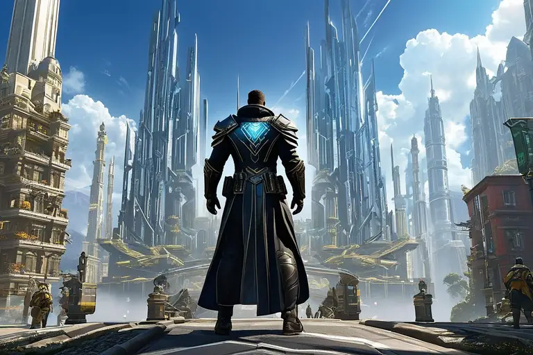
Progression wise the player will try to make themselves as powerful and secure as humanly as possible and stay that way for as long as possible unless the situation calls for special arrangements where the player will willingly want to or need to give up some power or resources to either invest into a future benefit or to gain access to something that they cannot at their current powerful configuration.
An example of the former is that the player amasses a lot of resources and they can share/donate/invest that wealth into a crappy village to turn it into a cool city, or to build a dam to gain its electrical power generation to power something awesome they want to use.
An example of the latter is that the player is in a giant mech suit, but the treasure/opponent they need to access requires them to go into a deep narrow cave where that mech suit will not fit. Or the player needs to find out critical information about another nation without provoking a needless war, so they go in with a lightweight infiltration outfit to enter a restricted area stealthily.
As such, the player is effectively progressing in the greater metagame, even if on a local scale their character greatly fluctuates in their current power level depending on what they may be doing in the game at any given time.
In terms of the global metagame progression, the player isn’t necessarily becoming more powerful per se, but what they’re doing instead is perfecting their world, making it more personal, more customized to the player’s own style, more attuned to their image as their masterpiece.
A good analogy would be the Japanese practice of Bonsai tree cultivation or gardening in general; you keep improving it while taking care of it, watching it beautifully evolve, being careful not to mess it up while squeezing out its maximum potential and making it as cool and shiny as possible.
In the real world it's called “making the world a better place”, so this is analogous to that.
Acknowledging the player’s actions, giving feedback and recording them as part of persistent history
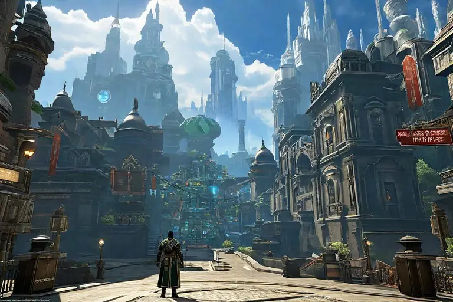
As such, the infinite metagame requires an active visual representational element that tracks all the players' efforts like an automatically evolving artwork.
It is a method of feedback to show the player that their actions do matter, that a real visible change has occurred and it is a confirmation that each session they have had so far did indeed improve their world and make life more wonderful inside that game universe.
It can be used to show what needs to be done next, what has been already done.
It can be used to celebrate victories, cheering the player, as if the game itself is expressing happiness of the player playing the game successfully.
It can also be used to mourn failures and losses, feeling sad with the player and giving empathy to the player when something went wrong.
It should never be used to reward nor punish the player under any circumstances; those are extrinsic motivators that are poisonous to any kind of activity. This thing should only support the game as an intrinsic element, an information screen.
As a set of examples, an “active visual representational element” could be a lot of different things:
- An overworld map that has flags, markers, color coding, icons, visuals, objects and anything else to show tangibly that something in the world has changed state. For example, let's say there was a dusty wasteland before and the player turned it into a lush green paradise and built awesome cities and towns, with roads and infrastructure. Or some place belonged to an evil alien empire or disease and the player has successfully wiped them out from large portions of the overworld.
- A memory log that lists your deeds and how you did them. Let's say the game is about running a postal service or a restaurant and the customers left behind randomly generated satisfying/funny feedback messages in the guestbook, showing that the work you did made people happy in a very real way.
- A history book or storyboard that chronicles notable events that happened in the game in chronological order, creating your very own autobiography that can be really fun to read afterwards.
- A medal box that has a bunch of medals with descriptions of what happened during major battles or what procedurally generated major events you were able to defeat with great success.
- A memorial wall of all the fallen heroes you played as and the achievements each of them managed to do while they were alive.
- A (regional) headquarters/city/town/garden/zone that has grown, evolved, become richer and more awesome with the various upgrades that you procured for it, showing clearly that the inhabitants of that place now have a far better quality of life than they did before.
- A previously dirty/corrupted/evil place - be it literally or metaphorically - that had now become spotlessly clean and beautiful after it was cleaned up and renovated by player actions.
These elements can be campaign specific, quest specific, metagame specific, region specific or global all encompassing. You can combine to have multiple layers of them - one for the greater metagame and another for the current campaign session specifically. You can have many of them for different parts of the game too.
It's something that is just outright satisfying and fun to look at, whereby through the simple virtue of me playing the game itself, I’m effectively creating this piece of art as a byproduct of my actions while I merely enjoy the moment-to-moment game mechanics. It also feels natural to have, making sense within the context of the game so much so that it would even feel odd and wrong if it was missing.
It provides an overview of the situation that the player can always bring up and look at and admire.
Initially it will show areas of interest, places that the player can explore and affect with their actions, inviting them to check them out, so even in the beginning it can be still interesting to look at while it serves a double function in this way.
The thing that would make it particularly cool and valuable if it would be something that can be printed out, copied into an image as a screenshot or an equivalent auto-assembled collage image, or otherwise be something that a player could share with people online or offline or download as a neat memento. This would have many benefits of players not only forming a deeper emotional connection with the game, but also help promote it virally online as players show their achievements, logs and stories.
Besides playing the game, it would also give people a reason to talk to each other about the things that happen in the game, being a convenient bridge to socialize and enjoy the game outside of itself by talking about it with others.
As a concept, this is something that is unique to games with procedural generation and emergent gameplay, as each regional world map will be different, each global map will be unique to each player and every log/book will be unique to each player too.
To give an example straight out of one my own design documents, I came up with this idea:
…one core idea to make each discardable galaxy unique and interesting is to procedurally generate a unique piece of reactive art. This is the premise:
1. Select a galaxy type at random (spiral, bar, elliptical, irregular)
2. Use the corresponding algorithm to generate its shape and natural appearance/coloring.
3. Using this galaxy silhouette as a base, generate a mosaic or pixel map that acts as a region interface overlay to show the completion/control status of the different pixels of this galaxy.
4. The idea is that this region map overlay starts off transparent, desaturated, gray, muted, but as player completes missions and grows the agency, eventually the galaxy conquest gets progress done, a layered perlin noise mask is used to gradually increase saturation, brightness, opacity, glow, vividly colored. Player can toggle on/off this completion view to see the original galaxy underneath and the completion saturation mosaic/pixel map.
5. I'm thinking this is best achieved by generating the fully vivid highly detailed colored artwork and use shaders, masks and opacity to desaturate/vanish it to its initial gray 5% opacity state. As the cookie clicker-esque incremental logic runs in the background, these shaders are tweaked accordingly to fully show and dazzle up the artwork by cranking up the shader knobs to cool mode.
This art piece is highly colorful, diverse, complex, detailed and abstract, often using a mildly randomized palette of rainbow colors, each color representing a color code for a regional government of a galactic civilization. It doesn't matter what they mean or what their distribution is. Usually there are thousands if not tens of thousands of regions and they likely contain subregions that aren't visible on the zoomed out map. I envision the region's rainbow palette is highly alterable and can create cool unique color combos that stand out uniquely for each galaxy.
As a fun/cool idea, once the player reaches 100% of a galaxy, they are given the honor of giving it a name and description/any text line before they dismiss and leave it for another galaxy. This old galaxy will then be screenshotted, both in the region map big in center and natural view in a corner, a title/name of the galaxy and the text the player wrote. This is a memento of the completed galaxy for the player to reminisce. Players can meme on the galaxy they are about to leave or be respectful or satisfied with the time spent in it.
I think there are many opportunities to create different types of generative artwork. In my example, the artwork is based on a seed rather than player actions - at least when a galaxy map is 100% cleared that is, except for the unique name they can give it at the end - but there is potential for overworld maps that are colored via player choices rather than being pre-colored like in my example.
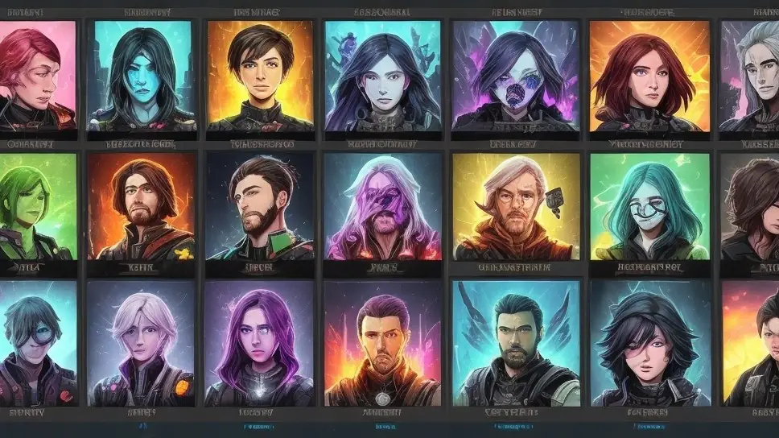
Meanwhile in another game project of mine that features a permadeath mechanic, each death will record the custom name and color scheme of that particular character, along with details of its death and achievements/stats. It will be impossible to create a character with the exact same name afterwards because the game will check against this memorial log when a new character is being created to carry on the torch of the old one.
This memorial log will be quite cool to look at despite the sad nature of it as it will feature a colorful portrait of the unit in a respectable and honoring way, along with the memorial screen being stylized to look aesthetically pleasing.
It will be more interesting to keep the memorial log rather than to delete or reset it purposefully out of embarrassment, as it is fun to watch it fill up with organic stories of different characters and how far they’ve managed to survive until they fell, or to see how far the current live character is still going. It almost becomes a game in itself to see how long you can make the log per each character and what kind of wild events or stats they will reach.
In both examples, these systems will continue to automatically produce something unique and interesting that makes it worth continuing to continue playing the game endlessly thanks to both the reactive feedback it provides and the mementos it generates.
Wilderness zone, a necessary ingredient for making an infinite metagame work
The last thing I want to talk about is the concept of the wilderness zone. This is loosely inspired by the old game Runescape by Jagex whereby the game’s world was split into two major zones; the regular world and then there was the wilderness.
- The regular world is where things stayed the same, permanent, persistent and stable.
- The wilderness however was a fluctuating, chaotic, temporary and unstable area. It had special rules that would automatically turn on that didn’t apply in the regular world, making things that happen in the wilderness far more dangerous than anywhere else. Not only that but the deeper you went into the wilderness, the more dangerous and chaotic it would become.
The reason I bring this up is that a similar structure is needed for an infinite metagame to continue working endlessly. An infinite metagame cannot work within a game world that only has a stable persistent area; it needs both a stable world zone and an unstable world zone.
The stable, regular world is meant to operate as the initial tutorial area as well as continue afterwards as a persistent headquarters location that the player can always return to to rest in, upgrade, prepare and launch into the wilderness to face a fresh unknown challenge, a new random procedurally generated campaign.
The unstable wilderness zone is where the infinite adventures happen. Its a temporary area/space/timeframe/place that is created for the duration of a campaign/quest where the player goes into with items gained from previous adventures, uses them to their aid to try to complete the campaign/quest and gains new items to bring back to the regular world as resources, trophies, loot, unique treasures, upgrades and other goodies.
The necessity of the wilderness zone comes from the fact that computer storage and memory have hard limits in real life that cannot be exceeded or the game will crash, the computer will freeze or otherwise be overloaded with too much data to keep going, effectively ending the game, which would make it finite as a result.
By keeping the regular world as a limited space that can hoard up to a certain amount of materials, the memory consumption of the game is capped off at a maximum that it cannot exceed, thus preventing crashes and running out of memory. But content and meaning wise that alone isn’t enough because human beings have a natural need for endless variety and this is something the regular world cannot satisfy because it is limited and confined by its very nature.
The wilderness is a solution to that by creating a temporary, discardable randomized partition zone that allows the player to step into a new fresh area that allows for a completely new random adventure to happen outside the confines of the regular world. Because it is discardable, it will have a maximum memory footprint too, keeping the game stable and unable to “spill over”.
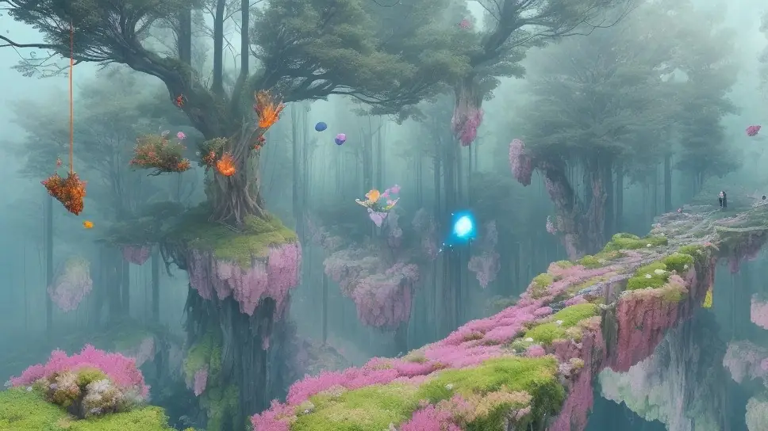
At the end of a procedurally generated campaign, that temporary wilderness partition is deleted to make room for the next one, but any actions taken in it are permanently recorded into logs and mementos, as well as any effects that impact the regular world will also happen, creating a sense of persistent consequences/benefits for each procedurally generated campaign you complete/fail at.
As a whole, the only thing that will keep growing endlessly is either a library of downloadable mementos or history logs that you can backup and move out of the game into a safe storage medium to exist on its own, in a format that you can read without needing to plug it into the game itself, such as JPEG, PNG, PDF, TXT, MD, RTF or anything similar that can be opened and viewed with common computer programs easily.
These mementos and history logs are designed to take as little disk space as possible to make it possible to keep thousands of them without creating issues on a computer. You’ll safely have more of them than you’ll ever be able to browse through!
In essence, the regular world provides a feeling of permanence and persistent haven that keeps track of the greater world, meanwhile the wilderness provides the spontaneity that is necessary to make each new game session interesting and engaging.
Ultimately, this sort of creates an illusion of an infinite world without needing to have an infinite world that otherwise would be impossible to contain within a computer in regards to disk space, RAM, processing power or any other factors. The best part is that this will feel totally fine to the player even if they consciously notice this “trick” as it is set up to maintain a fairly believable experience of a persistent infinite world.
Even if the player would wish to revisit a location they previously were in that took place in the wilderness, the metagame system could recreate/regenerate that space again - on the fly - with the changes that have since occurred in it based on some parameters and flags that were triggered in the game’s persistent overworld logic that monitors and updates the in-game universe after each campaign or major action within the regular world.
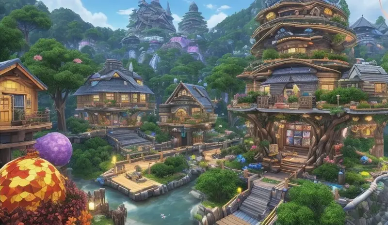
The player will also eventually notice that they don’t actually need a literal infinite regular world either because as a human, they can only realistically do one thing at a time and be in one place at a time. And the activity of amassing their goodies/wealth makes sense to do in a single central location, so players will naturally set up a home, HQ, camp or base in one place that will inadvertently become their cozy gathering spot - which they can customize, shuffle or reorganize at their will as much as they want. Everything needed is all there.
The form and shape of both the regular world and the wilderness is completely dependent on the game project. The regular world can either be something tangible like a physical homebase the player can run around in or it could just be an overworld screen with some interface elements to manage inventory or decide where to go next. At its most basic form, the regular world could even be nothing more than a campaign progress bar. Meanwhile the wilderness would be the campaign itself.
The terms “regular world” and “wilderness zone” themselves are merely training wheels, crutches. They might sound like a specific thing but you can envision them to be practically anything, it's only the concept that they’re supposed to convey that matters, not the actual term itself.
Feel free to imagine and even rename these terms to anything else to make it easier for you to conceptualize what works better for you in your mind and your specific project in particular. Again, only the actual concept/idea behind it is the thing that matters here.
Talk about it
Questions, disagreements and ideas of your own are all welcome. Discuss this article with other readers on the Reactorcore Games Discord, follow new articles and dev news on Patreon, or write to me directly.